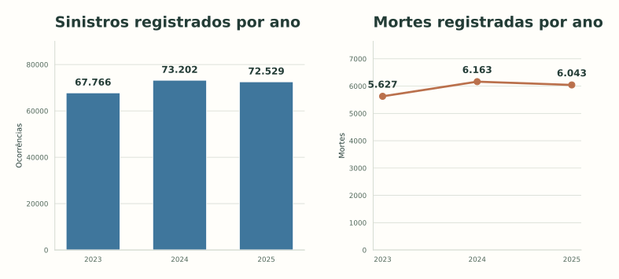
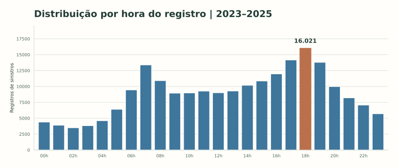
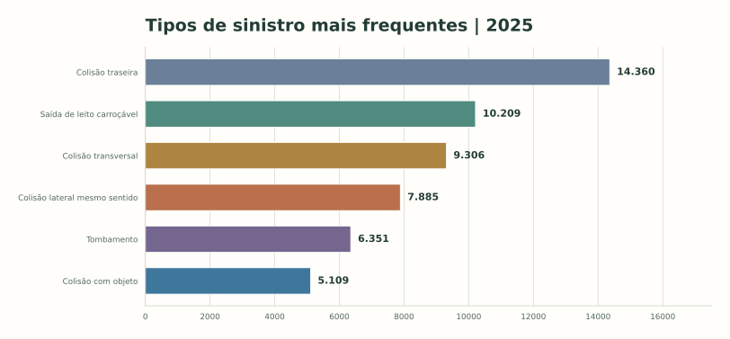
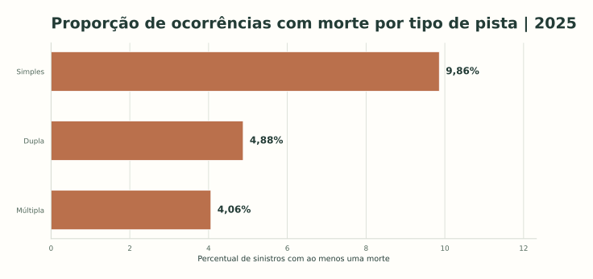
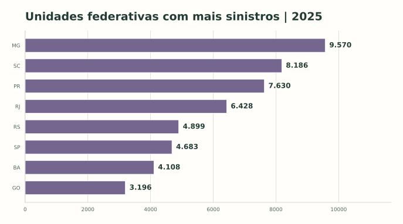

Resumo
Este estudo examina registros de sinistros de trânsito nas rodovias federais brasileiras entre 2023 e 2025, utilizando microdados de acesso público disponibilizados pela Polícia Rodoviária Federal (PRF). Foram processadas 213.497 ocorrências, com 17.833 mortes e 246.608 pessoas feridas registradas no período. A pesquisa adota abordagem quantitativa, exploratória e descritiva, combinando limpeza e padronização de dados em Python, análise de frequências, comparações temporais e comparações territoriais. Os resultados mostram aumento no número de sinistros entre 2023 e 2024, seguido de pequeno recuo em 2025, sem retorno ao patamar inicial. Em 2025, colisões traseiras figuraram entre os tipos mais frequentes, enquanto a proporção de ocorrências com pelo menos uma morte variou conforme características como o tipo de pista. A distribuição por unidade federativa e rodovia também evidenciou maior concentração de registros por unidade federativa e rodovia, sem estimar risco relativo. Os achados são discutidos sem atribuição causal e sem confundir contagens absolutas com medidas de risco ajustadas ao fluxo de tráfego. O trabalho reúne scripts e visualizações reproduzíveis, contribuindo para uma leitura mais acessível da segurança viária brasileira.
Palavras-chave: sinistros de trânsito; segurança viária; Polícia Rodoviária Federal; ciência de dados; análise territorial.
Abstract
This study examines road traffic crashes recorded on Brazilian federal highways from 2023 to 2025 using publicly available accident-level datasets published by the Federal Highway Police (PRF). A total of 213,497 records were processed, reporting 17,833 deaths and 246,608 injured people during the period. The analysis follows a quantitative, exploratory and descriptive approach, combining Python-based data cleaning, frequency analysis, temporal comparisons and territorial comparisons. The results indicate an increase in recorded crashes between 2023 and 2024, followed by a moderate decline in 2025, which did not fully reverse the previous rise. In 2025, rear-end collisions were among the most frequent crash types, while the proportion of crashes involving at least one death varied across road characteristics such as lane configuration. The territorial comparisons also highlighted concentrations of records in particular states and major highway corridors. Findings are interpreted cautiously, without causal claims or treating absolute counts as exposure-adjusted risk measures. Reproducible scripts and accessible visualizations are provided to support a clearer understanding of recent road safety patterns in Brazil.
Keywords: traffic crashes; road safety; Federal Highway Police; data science; territorial analysis.
1. Introdução
Uma rodovia liga cidades, movimenta a economia e faz parte da rotina de milhares de pessoas. Mas os sinistros de trânsito mostram que essa circulação também pode gerar perdas humanas e impactos sociais importantes. Examinar os registros disponíveis ajuda a enxergar onde e quando essas ocorrências se concentram, sem reduzir o problema a uma sequência de números.
Esta pesquisa utiliza os arquivos de acidentes agrupados por ocorrência disponibilizados pela Polícia Rodoviária Federal para o período de 2023 a 2025 (Brasil, 2022). A intenção é tornar os dados mais claros: organizar os registros, comparar indicadores, investigar características associadas a desfechos graves e apresentar visualizações que possam ser compreendidas mesmo por leitores sem familiaridade com programação.
A PRF adota a expressão sinistro de trânsito em seus materiais recentes. Neste artigo, o termo é empregado preferencialmente; a palavra acidente é preservada quando integra os nomes originais de campos ou documentos da base.
É importante fazer uma distinção desde o início: contar ocorrências não é o mesmo que calcular risco. Uma rodovia longa, movimentada ou com grande extensão atendida pode registrar mais sinistros sem que isso, isoladamente, prove maior risco para cada motorista. Por isso, os resultados são apresentados como evidências descritivas, com seus limites explicitados.
O que buscamos compreender
Cada pergunta leva à sua seção de resultados.
- ANÁLISE 01Evolução temporalComo variaram os sinistros, as mortes e os feridos entre 2023 e 2025?
- ANÁLISE 02Padrões e gravidadeQue diferenças aparecem por tipo de sinistro e características da via?
- ANÁLISE 03Distribuição territorialComo os registros se distribuem entre estados, municípios e rodovias?
2. Metodologia
O estudo foi desenvolvido com os arquivos de acidentes agrupados por ocorrência publicados no portal de dados abertos da PRF. Foram analisados os três conjuntos anuais, respeitando a unidade de observação de cada arquivo e o dicionário oficial (Brasil, 2020).
O pipeline utiliza Pandas e NumPy (McKinney, 2010) para validar datas, identificadores, valores ausentes e agrupamentos. As figuras científicas são produzidas em Python com Matplotlib (Hunter, 2007); a versão web oferece controles interativos a partir dos mesmos agregados. Os resultados territoriais seguem os campos de UF, município e rodovia dos arquivos oficiais. Não são exibidos mapas nem localizações individuais.
A extração foi realizada em novembro de 2026. Os arquivos ZIP originais são preservados; seus hashes SHA-256 e as regras de tratamento constam da auditoria, permitindo reproduzir os resultados e verificar sua procedência.
Atualizações posteriores das bases podem produzir totais diferentes dos anuários (Brasil, 2025) e (Brasil, 2026). Por consistência, os indicadores aqui apresentados utilizam apenas os três ZIPs incluídos no projeto.
Uma transformação reproduzível
# Trecho do ETL: contagem de ocorrências e somas por ano
for year, part in all_.groupby("ano", sort=True):
annual.append({"year": int(year),
"accidents": int(len(part)),
"deaths": int(part["mortos"].sum()),
"injured": int(part["feridos"].sum())})O trecho é uma versão abreviada da agregação anual em src/etl.py; as regras completas de limpeza e validação estão no repositório.
Como interpretar a “proporção fatal”?
É o percentual de sinistros com pelo menos uma morte entre os registros de determinada categoria. Por exemplo, entre as ocorrências em pista simples: ocorrências com morte ÷ total de ocorrências do grupo × 100. Isso não mede o risco individual de uma viagem.
3. Resultados e discussão
Mais do que contabilizar ocorrências, o estudo procura descrever o que mudou, quais padrões se repetem e onde os registros se concentram. As três leituras abaixo partem dos mesmos arquivos oficiais da PRF.
PERGUNTA 01 · EVOLUÇÃO TEMPORAL
3.1. A evolução recente não foi linear
Em 2023 a PRF registrou 67.766 sinistros. Em 2024 foram 73.202, aumento de +8,02%. O total caiu 0,92% em 2025, para 72.529. Essa oscilação mostra por que nenhum ano deve ser analisado isoladamente.
Três indicadores, uma mesma trajetória
Alterne o indicador ou a escala temporal para explorar os registros.

Consultar dados desta visualização em tabela
| Ano | Sinistros | Mortes | Feridos |
|---|---|---|---|
| 2023 | 67.766 | 5.627 | 78.463 |
| 2024 | 73.202 | 6.163 | 84.595 |
| 2025 | 72.529 | 6.043 | 83.550 |
Como os registros variam ao longo do dia?
Todos os anos combinados, de 2023 a 2025. Compare sinistros ou ocorrências com morte, sem confundir volume e risco.

Consultar dados desta visualização em tabela
| Hora | Sinistros | Mortes |
|---|---|---|
| 0 | 4.385 | 523 |
| 1 | 3.878 | 464 |
| 2 | 3.478 | 498 |
| 3 | 3.806 | 609 |
| 4 | 4.600 | 660 |
| 5 | 6.386 | 890 |
| 6 | 9.448 | 846 |
| 7 | 13.379 | 668 |
| 8 | 10.906 | 543 |
| 9 | 8.930 | 461 |
| 10 | 8.967 | 514 |
| 11 | 9.245 | 585 |
| 12 | 8.997 | 523 |
| 13 | 9.261 | 596 |
| 14 | 10.163 | 693 |
| 15 | 10.848 | 733 |
| 16 | 11.960 | 716 |
| 17 | 14.151 | 900 |
| 18 | 16.021 | 1.373 |
| 19 | 13.775 | 1.501 |
| 20 | 9.962 | 1.096 |
| 21 | 8.198 | 965 |
| 22 | 7.063 | 796 |
| 23 | 5.690 | 680 |
A leitura mais segura é que houve crescimento expressivo em 2024 e uma redução discreta no ano seguinte. Isso não basta para identificar o que provocou a mudança. A série mensal, disponível no gráfico, ajuda a observar a sazonalidade, mas não permite atribuir causas sem cruzamentos e dados adicionais.
Mesmo após o recuo em 2025, o total continuou acima do observado no início da série. A figura mostra a mudança nos registros, não a causa dela.
PERGUNTA 02 · PERFIL E GRAVIDADE
3.2. Frequência e gravidade contam histórias diferentes
Em 2025, Colisão traseira foi o tipo mais frequente, com 14.360 ocorrências. Mas frequência e gravidade não são sinônimos: a classificação de cada sinistro permite observar quantos registros tiveram pelo menos uma morte.
Principais tipos e causas
Escolha o agrupamento e compare as frequências registradas em 2025.

Consultar dados desta visualização em tabela
| Tipo | Ocorrências | Mortes | Feridos |
|---|---|---|---|
| Colisão traseira | 14.360 | 683 | 16.376 |
| Saída de leito carroçável | 10.209 | 700 | 11.638 |
| Colisão transversal | 9.306 | 481 | 12.015 |
| Colisão lateral mesmo sentido | 7.885 | 228 | 8.839 |
| Tombamento | 6.351 | 293 | 7.241 |
| Colisão com objeto | 5.109 | 323 | 4.952 |
| Colisão frontal | 4.739 | 1.863 | 7.596 |
Ocorrências com pelo menos uma morte
A porcentagem considera o número de sinistros com morte dividido pelo total de sinistros em cada grupo, não o risco de viajar naquela condição.

Consultar dados desta visualização em tabela
| Tipo de pista | Ocorrências | Com morte | Proporção |
|---|---|---|---|
| Simples | 34.733 | 3.424 | 9,86% |
| Dupla | 30.782 | 1.501 | 4,88% |
| Múltipla | 7.014 | 285 | 4,06% |
Mais comum não significa mais fatal
Compare a participação de sinistros com morte dentro de dois tipos específicos, conforme o registro oficial de 2025.
Na comparação por tipo de pista, 9,86% das ocorrências em pista simples e 4,88% das ocorrências em pista dupla tiveram ao menos uma morte em 2025. São proporções descritivas dentro dos grupos; diferenças de velocidade, tráfego e perfil de sinistros impedem atribuição causal ao tipo de pista isoladamente.
PERGUNTA 03 · DISTRIBUIÇÃO GEOGRÁFICA
3.3. Onde os registros se concentram?
Em 2025, MG teve o maior número absoluto de sinistros: 9.570. As rodovias BR-101 e BR-116 também se destacaram em ocorrências. Esses totais ajudam a localizar concentração, mas não permitem classificar segurança relativa de cada trecho sem estimativas de circulação.
Onde há mais registros?
Veja as maiores contagens absolutas e compare os grupos.

Consultar dados desta visualização em tabela
| UF | Ocorrências | Mortes | Feridos |
|---|---|---|---|
| MG | 9.570 | 765 | 12.002 |
| SC | 8.186 | 434 | 9.400 |
| PR | 7.630 | 593 | 8.537 |
| RJ | 6.428 | 330 | 7.659 |
| RS | 4.899 | 327 | 5.553 |
| SP | 4.683 | 221 | 4.988 |
| BA | 4.108 | 583 | 5.023 |
| GO | 3.196 | 308 | 3.557 |
| PE | 3.013 | 336 | 3.348 |
Os rankings identificam onde os registros absolutos se concentram, mas não informam o risco de um trajeto individual. Para comparações de risco entre corredores, faltam informações de exposição, como volume de veículos e extensão efetivamente percorrida. Os dados geográficos permanecem na base tratada, embora os mapas tenham sido retirados da apresentação do artigo.
Como ler estes resultados. Todos os totais e gráficos deste artigo foram recalculados a partir das versões dos três ZIPs oficiais da PRF incluídas no projeto. A comparação com publicações consolidadas pode revelar pequenas diferenças decorrentes da data de extração. Os metadados de auditoria e os hashes dos arquivos estão disponíveis para conferência.
Os indicadores derivam exclusivamente das versões dos três arquivos ZIP incluídas neste pacote. Consulte analysis.json e data/processed/auditoria.json para conferir o processamento. Revisões futuras dos arquivos oficiais podem alterar as contagens.
4. Conclusão
O triênio 2023–2025 apresentou dois movimentos diferentes: crescimento do número de sinistros e mortes em 2024, seguido de leve redução em 2025. O último ano, porém, continuou acima do nível observado em 2023. Esse comportamento reforça a importância de analisar séries completas, em vez de extrair conclusões a partir de apenas dois momentos.
Ao aprofundar os registros de 2025, o estudo identificou colisões traseiras entre os tipos mais frequentes e diferenças importantes na participação de ocorrências fatais conforme características da via. Também foi possível localizar maior concentração de registros em estados como Minas Gerais, Santa Catarina e Paraná e em corredores como as BR-101 e BR-116.
Esses resultados respondem às perguntas de pesquisa em caráter exploratório e descritivo. Eles não medem o risco de deslocamento em cada rodovia, nem demonstram causalidade entre fatores. Como próximos passos, serão úteis comparações com dados de fluxo de tráfego, recortes regionais mais detalhados e avaliação estatística de variáveis simultâneas.
5. Dados, código e princípios FAIR
Os dados oficiais, os scripts, os hashes de auditoria e os conjuntos derivados permitem conferir os resultados. O planejamento segue os princípios FAIR de Wilkinson et al. (2016). O código e os conjuntos de dados que sustentam este artigo podem ser consultados no repositório do projeto no GitHub, depois do envio dos arquivos. A hospedagem do artigo pelo GitHub Pages será ativada na etapa de publicação.
- F Findable
- Arquivos por ano, nomes padronizados e documentação de origem.
- A Accessible
- Fonte oficial pública; scripts e derivados incluídos no pacote.
- I Interoperable
- CSV, JSON e dicionário de variáveis.
- R Reusable
- Código versionado, licenças, auditoria e testes.
Como reproduzir a pesquisaPython 3.13 · ETL, gráficos e testes
Na raiz do projeto, instale as dependências em um ambiente virtual. Os arquivos originais permanecem em data/raw/.
# Na raiz do projeto, com Python 3.13 no ambiente virtual
python -m pip install -r requirements.txt
python scripts/run_pipeline.py
python -m pytest -qBaixar dados agregados em JSON · Consultar dados oficiais da PRF ↗
Código autoral sob licença MIT; os dados originais permanecem atribuídos à PRF, segundo as condições de acesso e reutilização divulgadas pelo órgão. Consulte as fontes e referências para informações de reuso.
Glossário essencial
Termos que ajudam a interpretar o trabalho sem precisar consultar a documentação técnica a cada parágrafo.
Sinistro de trânsito
Ocorrência de trânsito registrada pela PRF. É o nome preferido na publicação; “acidente” permanece nos campos originais.
Ocorrência fatal
Registro de sinistro com pelo menos uma morte. Não equivale ao número de pessoas mortas.
ETL
Extração, Transformação e Carga: etapas que tornam os arquivos brutos preparados para a análise.
FAIR
Princípios de dados localizáveis, acessíveis, interoperáveis e reutilizáveis. Orientam a documentação e o compartilhamento da pesquisa.
Taxa de risco
Exige um denominador de exposição, como veículos-quilômetro. As contagens deste artigo não são taxas ajustadas à circulação.
6. Referências
Referências conforme a ABNT NBR 6023:2025; as citações no texto seguem o sistema autor-data da ABNT NBR 10520:2023. Os links direcionam a páginas oficiais, registros acadêmicos ou versões de acesso aberto.
- BRASIL. Polícia Rodoviária Federal. Dados abertos da PRF. Brasília, DF: PRF, 2022. Atualizado em 28 jul. 2026. Disponível em: https://www.gov.br/prf/pt-br/acesso-a-informacao/dados-abertos/dados-abertos-da-prf. Acesso em: 12 nov. 2026.
- BRASIL. Polícia Rodoviária Federal. Dicionário de dados: acidentes. Brasília, DF: PRF, 2020. Atualizado em 14 nov. 2023. Disponível em: https://www.gov.br/prf/pt-br/acesso-a-informacao/dados-abertos/dicionario-acidentes. Acesso em: 12 nov. 2026.
- BRASIL. Polícia Rodoviária Federal. Anuário estatístico 2024. Brasília, DF: PRF, 2025. Disponível em: https://www.gov.br/prf/pt-br/acesso-a-informacao/dados-abertos/diest-arquivos/anuario-2024_final.html. Acesso em: 12 nov. 2026.
- BRASIL. Polícia Rodoviária Federal. Anuário estatístico 2025. Brasília, DF: PRF, 2026. Disponível em: https://www.gov.br/prf/pt-br/acesso-a-informacao/dados-abertos/diest-arquivos/anuario-2025_final.html. Acesso em: 12 nov. 2026.
- HUNTER, J. D. Matplotlib: a 2D graphics environment. Computing in Science & Engineering, [s. l.], v. 9, n. 3, p. 90–95, 2007. DOI: 10.1109/MCSE.2007.55. Disponível em: https://matplotlib.org/stable/users/project/citing.html. Acesso em: 12 nov. 2026.
- McKINNEY, W. Data structures for statistical computing in Python. In: PYTHON IN SCIENCE CONFERENCE, 9., 2010. Proceedings [...]. [S. l.]: SciPy, 2010. p. 56–61. DOI: 10.25080/Majora-92bf1922-00a. Disponível em: https://proceedings.scipy.org/articles/Majora-92bf1922-00a.pdf. Acesso em: 12 nov. 2026.
- WILKINSON, M. D. et al. The FAIR Guiding Principles for scientific data management and stewardship. Scientific Data, [s. l.], v. 3, art. 160018, 2016. DOI: 10.1038/sdata.2016.18. Disponível em: https://pmc.ncbi.nlm.nih.gov/articles/PMC4792175/. Acesso em: 12 nov. 2026.